Jichu Mao
Graphics performance engineer at TikTok
Selected work
-
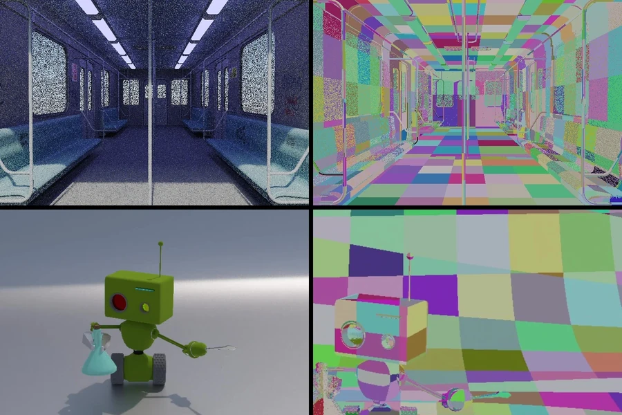
World-Space ReSTIR in Vulkan
World-space global illumination in a Vulkan ray-tracing pipeline. About 40% more accurate than screen-space ReSTIR in large scenes, for roughly 5% more render time.
- ≈40%higher accuracy than screen-space ReSTIR in large scenes
- ≈5%extra render time
- 1.3 Mtriangles in the subway test scene, at 1 sample per pixel
-

CUDA Path Tracer
A GPU path tracer in CUDA with glTF scenes, physically based materials, depth of field and environment lighting. Stream compaction cuts frame time from 25.7 to 18.2 ms in open scenes.
-
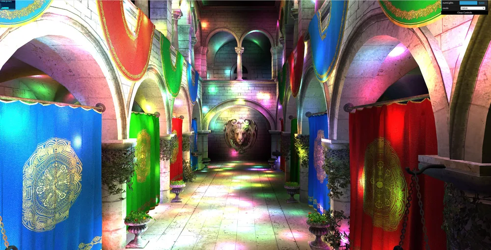
WebGPU Forward+ and Clustered Deferred Shading
Forward+ and clustered deferred shading in the browser. With 5,000 moving lights at 4K, clustered deferred runs above 100 fps where naive forward shading manages 3.
-
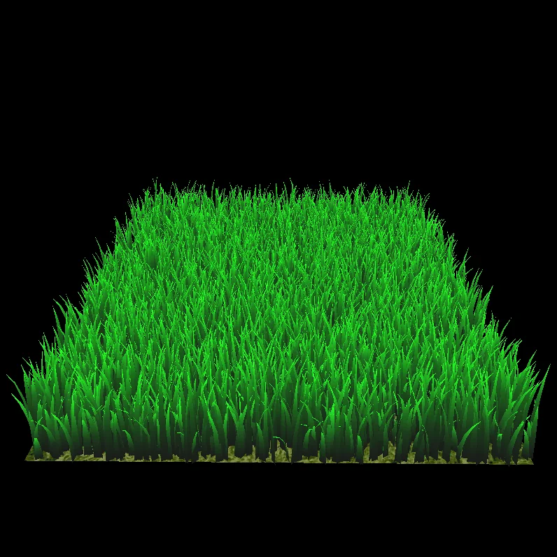
Vulkan Grass Rendering
Real-time grass in Vulkan. A compute shader simulates and culls every blade; with 32,768 blades, culling lifts the frame rate from 70 to 228 fps.
-
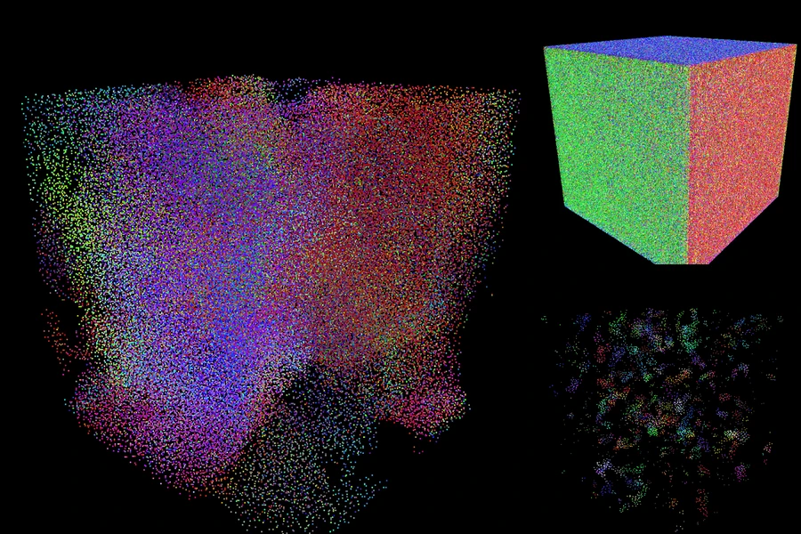
CUDA Flocking
Reynolds’ boids simulated on the GPU with CUDA. A coherent uniform grid runs 100,000 boids at 2,677 fps where brute force manages 43.
More work
-
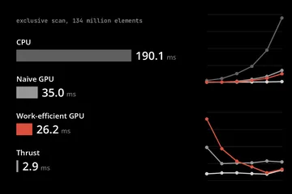
CUDA Stream Compaction
-
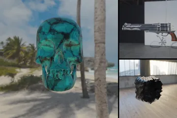
Physically-Based Shaders
-
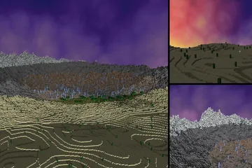
Mini Minecraft
-
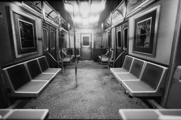
Virtual Subway
-
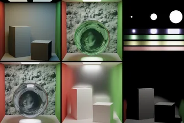
Monte Carlo Path Tracer
-
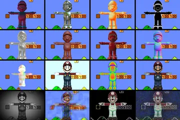
GLSL Shaders
-
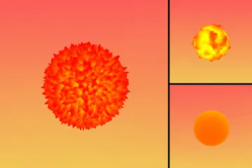
Procedural Fireball
-

Stylized 3D Scene in Unity
-
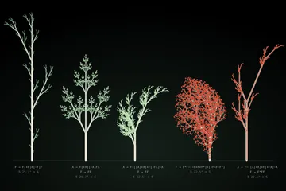
Tree Creator – Plugin for Maya & Houdini
-

Procedural Jellyfish and Buildings in Houdini
-
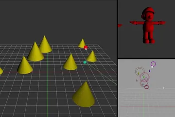
Animation Toolkit
-
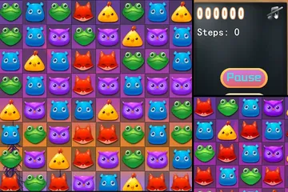
Gem Match Game
-
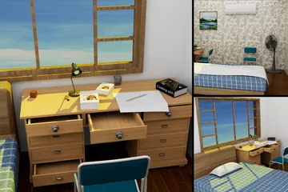
Maya 3D Scene Modeling Project
-
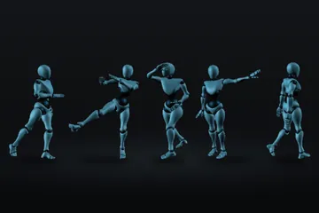
Motion Capture
-
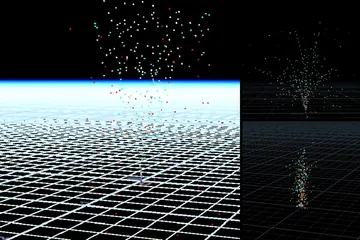
Houdini-based Fireworks Simulation
About
I work on the real-time effect rendering engine at TikTok. Before that: a master’s in Computer Science & Computer Graphics at the University of Pennsylvania, and internships at TikTok, Infold Games, Apple and the University of Alberta.
Away from the GPU I take photographs.